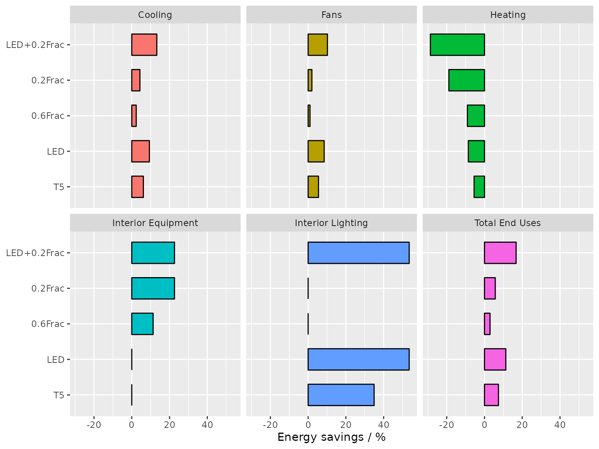

This vignette demonstrates the process of performing parametric
simulation analyses using the ParametricJob class. The main
focuses are on showcasing the capabilities of (1) creating parametric
models by applying measures and (2) easing the comparative analysis by
reusing code snippets developed in data exploration process.
Parametric prototype
The ParametricJob class in eplusr is a parametric
prototype that provides a set of abstractions to ease the process of
parametric model generation, design alternative evaluation, and large
parametric simulation management.
An overview of the parametric prototype implementation is shown blow:
knitr::include_graphics("parametric.png")
A parametric simulation is initialized using param_job()
giving a seed model and a weather file.
library(eplusr)
library(dplyr)
path_model <- path_eplus_example("23.1", "RefBldgMediumOfficeNew2004_Chicago.idf")
path_weather <- path_eplus_weather("23.1", "USA_IL_Chicago-OHare.Intl.AP.725300_TMY3.epw")
idf <- read_idf(path_model)
#> IDD v23.1.0 has not been parsed before.
#> Try to locate 'Energy+.idd' in EnergyPlus v23.1.0 installation folder '/usr/local/EnergyPlus-23-1-0'.
#> IDD file found: '/usr/local/EnergyPlus-23-1-0/Energy+.idd'.
#> Start parsing...
#> Parsing completed.
idf$SimulationControl$Run_Simulation_for_Weather_File_Run_Periods <- "Yes"
idf$OutputControl_Table_Style$Unit_Conversion <- "JtoKWH"
idf$save(file.path(tempdir(), "MediumOffice.idf"), overwrite = TRUE)
# create a parametric prototype of given model and weather file
param <- param_job(idf, path_weather)Specify design alternatives
Design alternatives are specified by applying a measure function to the seed model. The concept of measure in the prototype is inspired by a similar concept in OpenStudio but tailored for flexibility and extensibility.
A measure is simply an R function that takes an Idf
object and any other parameters as input, and returns a set of modified
Idf objects as output, making it possible to leverage other
modules in the framework and apply statistical methods and libraries
existing in R to generate design options.
set_lpd() blow is a simple measure that modifies the LPD
(Lighting Power Density), and set_nightplug() is a measure
that modifies the off-work schedule values of plug loads by multiplying
a specified reduction faction value.
# create a measure for modifying LPD
set_lpd <- function(idf, lpd = NA) {
# keep the original if applicable
if (is.na(lpd)) return(idf)
# set 'Watts per Zone Floor Area' in all 'Lights' objects as input LPD
idf$set(Lights := list(watts_per_zone_floor_area = lpd))
# return the modified model
idf
}
# create a measure for reducing plug loads during off-work time
set_nightplug <- function(idf, frac = NA) {
# keep the original if applicable
if (is.na(frac)) return(idf)
# extract the plug load schedule into a tidy table
sch <- idf$to_table("bldg_equip_sch")
# modify certain schedule value specified using field names
sch <- sch %>%
mutate(value = case_when(
field %in% paste("Field", c(4,14,16,18)) ~ sprintf("%.2f", as.numeric(value) * frac),
TRUE ~ value
))
# update schedule object using the tidy table
idf$update(sch)
# return the modified model
idf
}Create parametric models
After a measure is defined, the method $apply_measure()
takes it and other parameter values specified to create a set of models.
Different measures can be chained together.
# combine two measures into one
ecm <- function(idf, lpd, nightplug_frac) {
idf <- set_lpd(idf, lpd)
idf <- set_nightplug(idf, nightplug_frac)
idf
}
# apply measures and create parametric models
param$apply_measure(ecm,
lpd = c( NA, 7.0, 5.0, NA, NA, 5.0),
nightplug_frac = c( NA, NA, NA, 0.6, 0.2, 0.2),
# name of each case
.names = c("Ori", "T5", "LED", "0.6Frac", "0.2Frac", "LED+0.2Frac")
)
#> Warning: There was 1 warning in `mutate()`.
#> ℹ In argument: `value = case_when(...)`.
#> Caused by warning in `sprintf()`:
#> ! NAs introduced by coercion
#> There was 1 warning in `mutate()`.
#> ℹ In argument: `value = case_when(...)`.
#> Caused by warning in `sprintf()`:
#> ! NAs introduced by coercion
#> There was 1 warning in `mutate()`.
#> ℹ In argument: `value = case_when(...)`.
#> Caused by warning in `sprintf()`:
#> ! NAs introduced by coercion
#> Measure 'ecm' has been applied with 6 new models created:
#> [1]: Ori
#> [2]: T5
#> [3]: LED
#> [4]: 0.6Frac
#> [5]: 0.2Frac
#> [6]: LED+0.2FracAfter parametric models have been created, you can retrive the
summary of the parameter values and model names using
$cases().
param$cases()
#> index case lpd nightplug_frac
#> <int> <char> <num> <num>
#> 1: 1 Ori NA NA
#> 2: 2 T5 7 NA
#> 3: 3 LED 5 NA
#> 4: 4 0.6Frac NA 0.6
#> 5: 5 0.2Frac NA 0.2
#> 6: 6 LED+0.2Frac 5 0.2Run parametric simulations in parallel
The $run() method will run all parametric simulations in
parallel and place each simulation outputs in a separate folder. All
simulation meta data will keep updating during the whole time and can be
retrieved using the $status() method for further
investigations.
param$run()
#> 1|RUNNING --> [IDF]'Ori.idf' +
#> [EPW]'USA_IL_Chicago-OHare.Intl.AP.725300_TMY3.epw'
#> 2|RUNNING --> [IDF]'T5.idf' +
#> [EPW]'USA_IL_Chicago-OHare.Intl.AP.725300_TMY3.epw'
#> 3|RUNNING --> [IDF]'LED.idf' +
#> [EPW]'USA_IL_Chicago-OHare.Intl.AP.725300_TMY3.epw'
#> 4|RUNNING --> [IDF]'0.6Frac.idf' +
#> [EPW]'USA_IL_Chicago-OHare.Intl.AP.725300_TMY3.epw'
#> 4|COMPLETED --> [IDF]'0.6Frac.idf' +
#> [EPW]'USA_IL_Chicago-OHare.Intl.AP.725300_TMY3.epw'
#> [1/6] | 17%
[32m■■■■■■
[39m [Elapsed: 52.8s]
#> 5|RUNNING --> [IDF]'0.2Frac.idf' +
#> [EPW]'USA_IL_Chicago-OHare.Intl.AP.725300_TMY3.epw'
#> [1/6] | 17%
[32m■■■■■■
[39m [Elapsed: 52.8s]
1|COMPLETED --> [IDF]'Ori.idf' +
#> [EPW]'USA_IL_Chicago-OHare.Intl.AP.725300_TMY3.epw'
#> [1/6] | 17%
[32m■■■■■■
[39m [Elapsed: 52.8s]
6|RUNNING --> [IDF]'LED+0.2Frac.idf' +
#> [EPW]'USA_IL_Chicago-OHare.Intl.AP.725300_TMY3.epw'
#> [1/6] | 17%
[32m■■■■■■
[39m [Elapsed: 52.8s]
2|COMPLETED --> [IDF]'T5.idf' +
#> [EPW]'USA_IL_Chicago-OHare.Intl.AP.725300_TMY3.epw'
#> [1/6] | 17%
[32m■■■■■■
[39m [Elapsed: 52.8s]
3|COMPLETED --> [IDF]'LED.idf' +
#> [EPW]'USA_IL_Chicago-OHare.Intl.AP.725300_TMY3.epw'
#> [1/6] | 17%
[32m■■■■■■
[39m [Elapsed: 52.8s]
[4/6] | 67%
[32m■■■■■■■■■■■■■■■■■■■■■
[39m [Elapsed: 56s]
#> 5|COMPLETED --> [IDF]'0.2Frac.idf' +
#> [EPW]'USA_IL_Chicago-OHare.Intl.AP.725300_TMY3.epw'
#> [4/6] | 67%
[32m■■■■■■■■■■■■■■■■■■■■■
[39m [Elapsed: 56s]
[5/6] | 83%
[32m■■■■■■■■■■■■■■■■■■■■■■■■■■
[39m [Elapsed: 1m 21s]
#> 6|COMPLETED --> [IDF]'LED+0.2Frac.idf' +
#> [EPW]'USA_IL_Chicago-OHare.Intl.AP.725300_TMY3.epw'
#> [5/6] | 83%
[32m■■■■■■■■■■■■■■■■■■■■■■■■■■
[39m [Elapsed: 1m 21s]
[6/6] | 100%
[32m■■■■■■■■■■■■■■■■■■■■■■■■■■■■■■■
[39m [Elapsed: 1m 29.2s]
#>
[32m──
[39m
[32mEnergPlus Parametric Simulation Job
[39m
[32m─────────────────────────────────────────
[39m
#> • Path: '/tmp/RtmptF16UJ/MediumOffice.idf'
#> • Version: '/usr/local/EnergyPlus-23-1-0/WeatherData/USA_IL_Chicago-OHare.Intl…
#> • EnergyPlus Version: '23.1.0'
#> • EnergyPlus Path: '/usr/local/EnergyPlus-23-1-0'
#> Applied Measure: 'ecm'
#> Parametric Models [6]:
#> [1]: 'Ori.idf' <-- SUCCEEDED
#> [2]: 'T5.idf' <-- SUCCEEDED
#> [3]: 'LED.idf' <-- SUCCEEDED
#> [4]: '0.6Frac.idf' <-- SUCCEEDED
#> [5]: '0.2Frac.idf' <-- SUCCEEDED
#> [6]: 'LED+0.2Frac.idf' <-- SUCCEEDED
#>
[42m
[30m Simulation started at '2024-02-09 02:16:18.488338' and completed successfully after 1.49 mins.
[39m
[49m
param$status()
#> $run_before
#> [1] TRUE
#>
#> $alive
#> [1] FALSE
#>
#> $terminated
#> [1] FALSE
#>
#> $successful
#> [1] TRUE
#>
#> $changed_after
#> [1] FALSE
#>
#> $job_status
#> index status idf
#> <int> <char> <char>
#> 1: 1 completed /tmp/RtmptF16UJ/Ori/Ori.idf
#> 2: 2 completed /tmp/RtmptF16UJ/T5/T5.idf
#> 3: 3 completed /tmp/RtmptF16UJ/LED/LED.idf
#> 4: 4 completed /tmp/RtmptF16UJ/0.6Frac/0.6Frac.idf
#> 5: 5 completed /tmp/RtmptF16UJ/0.2Frac/0.2Frac.idf
#> 6: 6 completed /tmp/RtmptF16UJ/LED+0.2Frac/LED+0.2Frac.idf
#> epw
#> <char>
#> 1: /usr/local/EnergyPlus-23-1-0/WeatherData/USA_IL_Chicago-OHare.Intl.AP.725300_TMY3.epw
#> 2: /usr/local/EnergyPlus-23-1-0/WeatherData/USA_IL_Chicago-OHare.Intl.AP.725300_TMY3.epw
#> 3: /usr/local/EnergyPlus-23-1-0/WeatherData/USA_IL_Chicago-OHare.Intl.AP.725300_TMY3.epw
#> 4: /usr/local/EnergyPlus-23-1-0/WeatherData/USA_IL_Chicago-OHare.Intl.AP.725300_TMY3.epw
....Collect results in one go
The ParametricJob class leverages the tidy data
interface to retrieve parametric simulation results in a tidy format.
For all resulting tidy tables, an extra column containing the simulation
job identifiers is prepended in each table. It can be used as an index
or key for further data transformations, analyses and visualization to
compare results of different simulated design options.
# read building energy consumption from Standard Reports
param_end_use <- param$tabular_data(table_name = "End Uses", wide = TRUE)[[1L]]
print(param_end_use)
#> index case report_name report_for
#> <int> <char> <char> <char>
#> 1: 1 Ori AnnualBuildingUtilityPerformanceSummary Entire Facility
#> 2: 1 Ori AnnualBuildingUtilityPerformanceSummary Entire Facility
#> 3: 1 Ori AnnualBuildingUtilityPerformanceSummary Entire Facility
#> 4: 1 Ori AnnualBuildingUtilityPerformanceSummary Entire Facility
#> 5: 1 Ori AnnualBuildingUtilityPerformanceSummary Entire Facility
#> 6: 1 Ori AnnualBuildingUtilityPerformanceSummary Entire Facility
#> 7: 1 Ori AnnualBuildingUtilityPerformanceSummary Entire Facility
#> 8: 1 Ori AnnualBuildingUtilityPerformanceSummary Entire Facility
#> 9: 1 Ori AnnualBuildingUtilityPerformanceSummary Entire Facility
#> 10: 1 Ori AnnualBuildingUtilityPerformanceSummary Entire Facility
#> 11: 1 Ori AnnualBuildingUtilityPerformanceSummary Entire Facility
#> 12: 1 Ori AnnualBuildingUtilityPerformanceSummary Entire Facility
#> 13: 1 Ori AnnualBuildingUtilityPerformanceSummary Entire Facility
#> 14: 1 Ori AnnualBuildingUtilityPerformanceSummary Entire Facility
#> 15: 1 Ori AnnualBuildingUtilityPerformanceSummary Entire Facility
#> 16: 2 T5 AnnualBuildingUtilityPerformanceSummary Entire Facility
#> 17: 2 T5 AnnualBuildingUtilityPerformanceSummary Entire Facility
#> 18: 2 T5 AnnualBuildingUtilityPerformanceSummary Entire Facility
#> 19: 2 T5 AnnualBuildingUtilityPerformanceSummary Entire Facility
#> 20: 2 T5 AnnualBuildingUtilityPerformanceSummary Entire Facility
#> 21: 2 T5 AnnualBuildingUtilityPerformanceSummary Entire Facility
#> 22: 2 T5 AnnualBuildingUtilityPerformanceSummary Entire Facility
#> 23: 2 T5 AnnualBuildingUtilityPerformanceSummary Entire Facility
#> 24: 2 T5 AnnualBuildingUtilityPerformanceSummary Entire Facility
#> 25: 2 T5 AnnualBuildingUtilityPerformanceSummary Entire Facility
#> 26: 2 T5 AnnualBuildingUtilityPerformanceSummary Entire Facility
#> 27: 2 T5 AnnualBuildingUtilityPerformanceSummary Entire Facility
#> 28: 2 T5 AnnualBuildingUtilityPerformanceSummary Entire Facility
....Data exploration
After calling the $run() method to conduct parallel runs
of simulations, the tidy data interface can be used to extract any
simulation outputs of interest using $report_data(),
$tabular_data(), etc.
In this example, the building energy consumptions of all six models
are extracted using one line of code. The resulting data format is the
same as that of a single simulation and is equivalent to bind rows from
six tables into one tidy table. A case column is prepended
using the names specified in $apply_measure(). It works as
an identifier to group the results by different parametric models using
group_by() and nest() functions from the
tidyverse package.
This data structure makes it effortless to perform comparative analyses by taking the code snippets developed in data exploration for a single simulation and applying them to each of the parametric simulations.
# read building area from Standard Reports
area <- param$tabular_data(table_name = "Building Area", wide = TRUE)[[1L]]
# calculate EUI breakdown
param_eui <- param_end_use %>%
select(case, category = row_name, electricity = `Electricity [kWh]`) %>%
filter(electricity > 0.0) %>%
arrange(-electricity) %>%
mutate(eui = round(electricity / area$'Area [m2]'[1], digits = 2)) %>%
select(case, category, eui) %>%
# exclude categories that did not change
filter(category != "Pumps", category != "Exterior Lighting")
print(param_eui)
#> case category eui
#> <char> <char> <num>
#> 1: Ori Total End Uses 154.14
#> 2: 0.6Frac Total End Uses 149.60
#> 3: 0.2Frac Total End Uses 145.34
#> 4: T5 Total End Uses 142.75
#> 5: LED Total End Uses 136.72
#> 6: LED+0.2Frac Total End Uses 128.32
#> 7: Ori Interior Equipment 59.46
#> 8: T5 Interior Equipment 59.46
#> 9: LED Interior Equipment 59.46
#> 10: 0.6Frac Interior Equipment 52.74
#> 11: 0.2Frac Interior Equipment 46.01
#> 12: LED+0.2Frac Interior Equipment 46.01
#> 13: LED+0.2Frac Heating 36.69
#> 14: 0.2Frac Heating 33.90
#> 15: Ori Interior Lighting 33.80
#> 16: 0.6Frac Interior Lighting 33.80
#> 17: 0.2Frac Interior Lighting 33.80
#> 18: 0.6Frac Heating 31.10
#> 19: LED Heating 30.96
#> 20: T5 Heating 30.09
#> 21: Ori Heating 28.52
#> 22: T5 Interior Lighting 21.99
#> 23: LED Interior Lighting 15.71
#> 24: LED+0.2Frac Interior Lighting 15.71
#> 25: Ori Cooling 15.36
#> 26: 0.6Frac Cooling 15.01
#> 27: 0.2Frac Cooling 14.71
#> 28: T5 Cooling 14.43
....
# extract the seed model, i.e. "Ori" case as the baseline
ori_eui <- param_eui %>% filter(case == "Ori") %>% select(-case)
# calculate energy savings based on the baseline EUI
param_savings <- param_eui %>%
right_join(ori_eui, by = "category", suffix = c("", "_ori")) %>%
mutate(savings = (eui_ori - eui) / eui_ori * 100) %>%
filter(case != "Ori")
print(param_savings)
#> case category eui eui_ori savings
#> <char> <char> <num> <num> <num>
#> 1: 0.6Frac Total End Uses 149.60 154.14 2.9453743
#> 2: 0.2Frac Total End Uses 145.34 154.14 5.7090956
#> 3: T5 Total End Uses 142.75 154.14 7.3893863
#> 4: LED Total End Uses 136.72 154.14 11.3014143
#> 5: LED+0.2Frac Total End Uses 128.32 154.14 16.7510056
#> 6: T5 Interior Equipment 59.46 59.46 0.0000000
#> 7: LED Interior Equipment 59.46 59.46 0.0000000
#> 8: 0.6Frac Interior Equipment 52.74 59.46 11.3017154
#> 9: 0.2Frac Interior Equipment 46.01 59.46 22.6202489
#> 10: LED+0.2Frac Interior Equipment 46.01 59.46 22.6202489
#> 11: LED+0.2Frac Heating 36.69 28.52 -28.6465638
#> 12: 0.2Frac Heating 33.90 28.52 -18.8639551
#> 13: 0.6Frac Interior Lighting 33.80 33.80 0.0000000
#> 14: 0.2Frac Interior Lighting 33.80 33.80 0.0000000
#> 15: 0.6Frac Heating 31.10 28.52 -9.0462833
#> 16: LED Heating 30.96 28.52 -8.5553997
#> 17: T5 Heating 30.09 28.52 -5.5049088
#> 18: T5 Interior Lighting 21.99 33.80 34.9408284
#> 19: LED Interior Lighting 15.71 33.80 53.5207101
#> 20: LED+0.2Frac Interior Lighting 15.71 33.80 53.5207101
#> 21: 0.6Frac Cooling 15.01 15.36 2.2786458
#> 22: 0.2Frac Cooling 14.71 15.36 4.2317708
#> 23: T5 Cooling 14.43 15.36 6.0546875
#> 24: LED Cooling 13.93 15.36 9.3098958
#> 25: LED+0.2Frac Cooling 13.33 15.36 13.2161458
#> 26: 0.6Frac Fans 3.97 4.01 0.9975062
#> 27: 0.2Frac Fans 3.93 4.01 1.9950125
#> 28: T5 Fans 3.79 4.01 5.4862843
....
# plot a bar chart to show the energy savings
library(ggplot2)
param_savings %>%
mutate(case = factor(case, names(param$models()))) %>%
ggplot(aes(case, savings, fill = category)) +
geom_bar(position = "dodge", stat = "identity", width = 0.6, color = "black",
show.legend = FALSE) +
facet_wrap(vars(category), nrow = 2) +
labs(x = NULL, y = "Energy savings / %") +
coord_flip()
Extensions based on ParametricJob class
The ParametricJob class is designed to be simple yet
flexible and extensible. One good example of its extensibility is the epluspar R package,
which provides new classes for conducting specific parametric analyses
on EnergyPlus models, including sensitivity analysis, Bayesian
calibration and optimization using Generic algorithm.
All the new classes introduced are based on the
ParametricJob class. The main difference mainly lies in the
specific statistical method used for sampling parameter values when
calling $apply_measure() method.